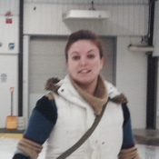
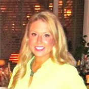

Welcome!
On behalf of the Executive, thank you for supporting the Ancaster Community Skating Program. The 2016-2017 season is here and skaters are sure to enjoy lots of learning and fun. Our staff is ready and eager.

We welcome the return of Masha back to our Learn to Skate and Figure Skating Programs and wish her well as she takes on the Head Coach position. Masha has been a figure skating coach with the Ancaster Community Skating Program on and off for the last 19 years. She inherited her love of skating from her mother who started teaching her at age 3. Masha joined Dundas Figure Skating Club program at age 5 and at age 7 moved to Wentworth Figure Skating Club. She started her coaching role at age 11 with the CanSkate and CanFigure Skate programs and later earned her National Coaching Certificate Level 1. During her own career of figure skating Masha competed on an amateur level nationally in both Freeskate and with a Syncho Skating Team.

Chelsea has been skating for over 24 years. As a singles skater, she is a CFSA triple gold medallist in dance, skills, and interpretive. Chelsea has competed at two national championships as a synchronized skater, winning a silver medal at the 2001 Canadian Championships in Regina, Saskatchewan. While completing her B.Sc. degree at Western, Chelsea coached for the University Skating School in London, Ontario. She spent last season volunteering her time with the CanSkate program at the Brant Figure Skating Club in Brantford. She is currently a member of the Oakville Edge Open Synchronized Skating Team, and hopes to attend this year's National Championships in Waterloo, Ontario. She has now joined Ancaster Community Skating Program as one of our new coaches.
Your comments and support are, as always, a necessary part of our success.